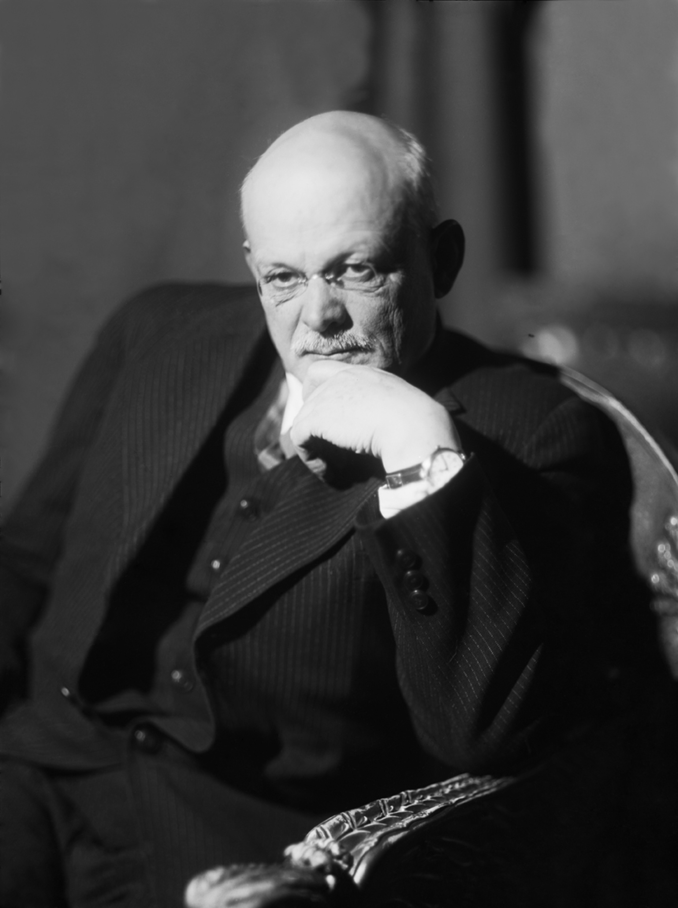
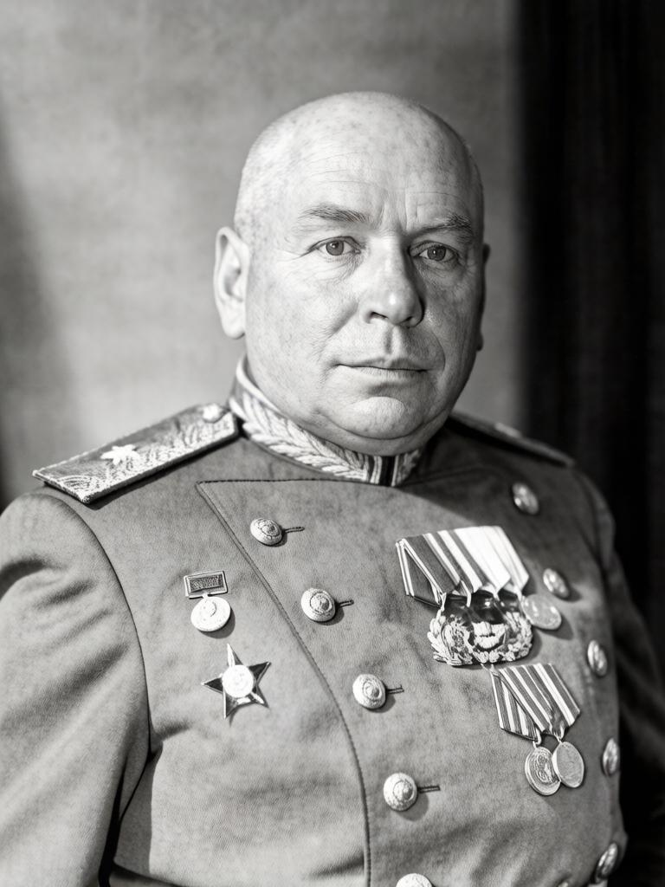
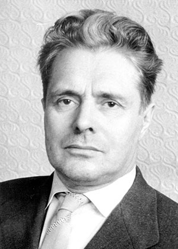
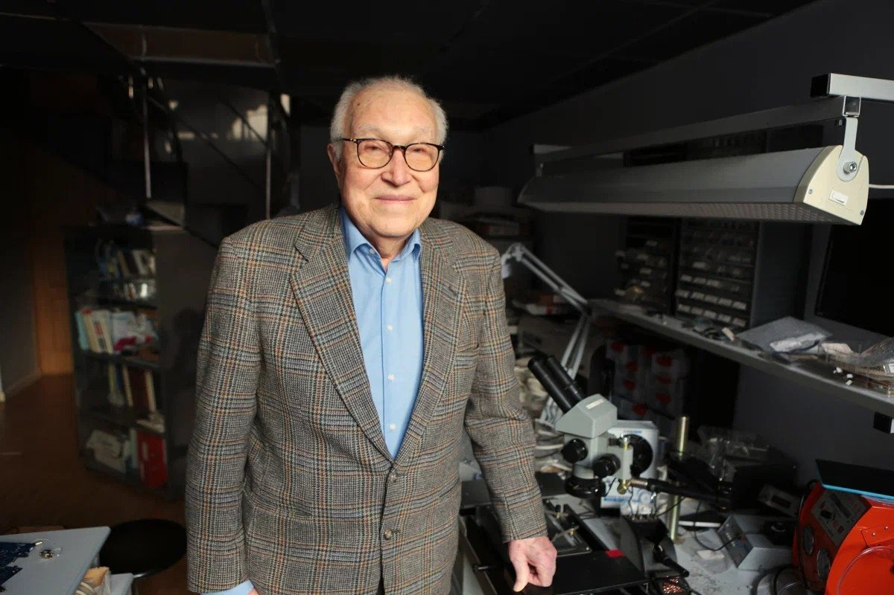
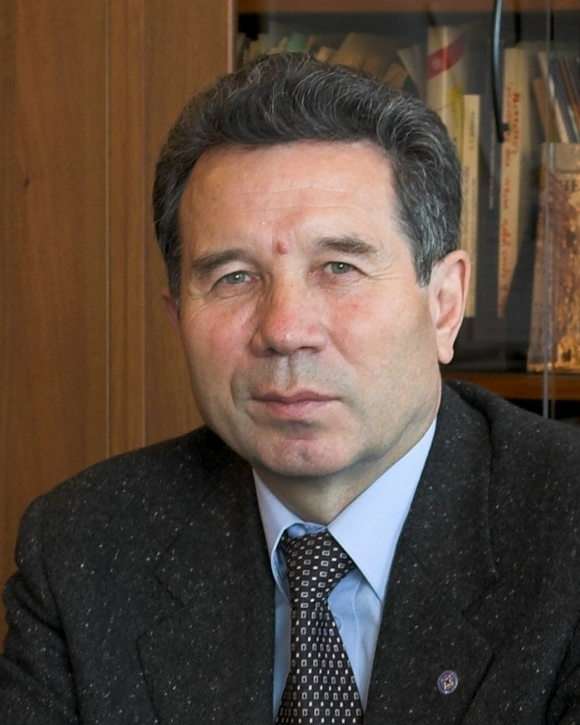
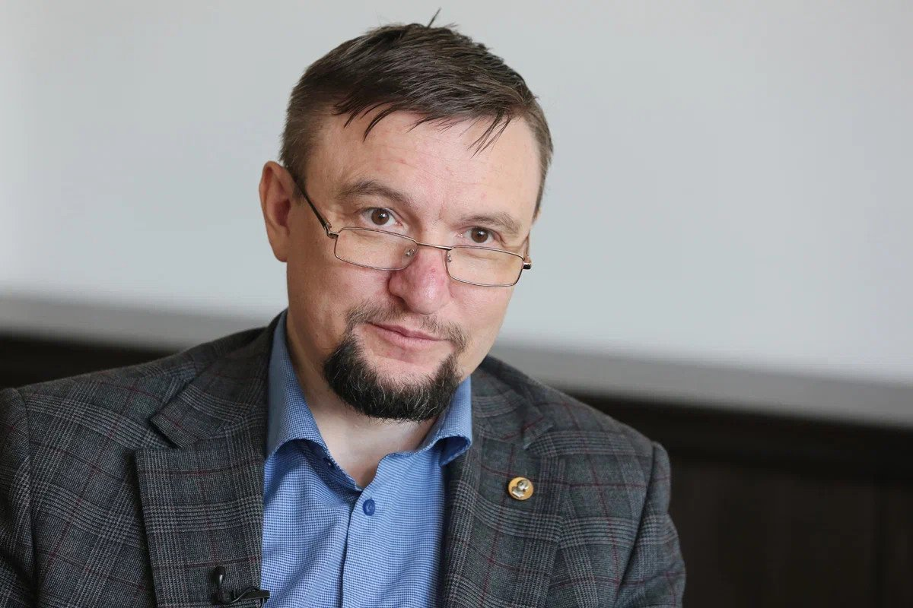

Академик А. А. Чернышев. Главный редактор с 1936 по 1938 (источник: www.ras.ru)

Член-корреспондент АН СССР В. И. Коваленков. Главный редактор с 1938 по 1951

Академик В. А. Трапезников. Главный редактор с 1951 по 1988 (источник: www.ipu.ru)

Академик Н. А. Кузнецов. Главный редактор с 1989 по 2008. Фотограф Ольга Мерзлякова (scientificrussia.ru)

Академик С. Н. Васильев. Главный редактор с 2009 по 2020 (источник: www.ipu.ru)

Член-корреспондент РАН А. А. Галяев. Главный редактор с октября 2020 г. Фотограф Ольга Мерзлякова (scientificrussia.ru)